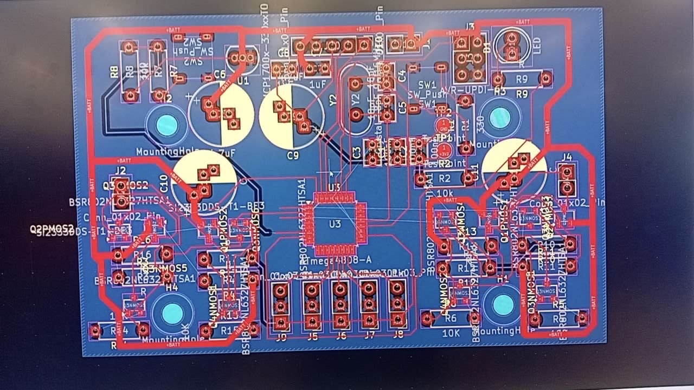

Mechanical Design / Controls
Line Follower Robot
A five-person team designed and built the robot from scratch: PCB, sensors, control code and the full mechanical platform.
- My part
- Mechanical design and build: chassis, drivetrain, braking and the test setup, plus on-track tuning
- Built
- 3D-printed PLA chassis, two-stage 22:1 gearbox, cast silicone tyres
- Result
- Third on race day, 6.150s lap, 0.14s off first

01
The braking problem
- The PCB's H-bridge didn't work, so the robot had no active braking. It coasted into corners and overshot, which capped usable power at about 15% duty cycle.
- Built a mechanical brake from tensioned rubber bands, set so the band tension matched motor power. That let the robot run full power and still hold the corners.


02
The build
- Designed and 3D-printed the PLA chassis, iterating across 20-plus layouts to cut printed mass to around 35 to 40 g while keeping it stiff.
- Set a 115 mm track width and 55/45 weight distribution for predictable cornering, and built a two-stage 22:1 gearbox with cast silicone tyres for grip off the corners.
- Swapped the supplied axle rods for M3 shanked bolts on a dual-bearing setup to remove play and friction.
- Finished the mechanical build before the electronics arrived, so race week was just placement and fine-tuning.


03
Testing
- Built a replica of the competition track in my garage to test in private, protecting the design from other teams and avoiding congestion on the shared lab track.
Set a practice lap quick enough to have won the event. Finished third on race day with a 6.150s lap, 0.14s off first, after a late motor failure.

Learned
- A dead H-bridge could have sunk the project. Instead it forced improvisation on both sides: a stripped-back motor driver to get the robot running, then the brake and the mechanical work to make it quick.
- When time is tight, a fix you can build and test beats a perfect one you can't finish.